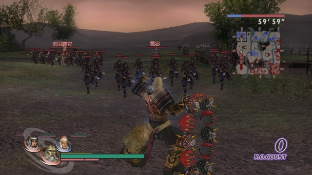
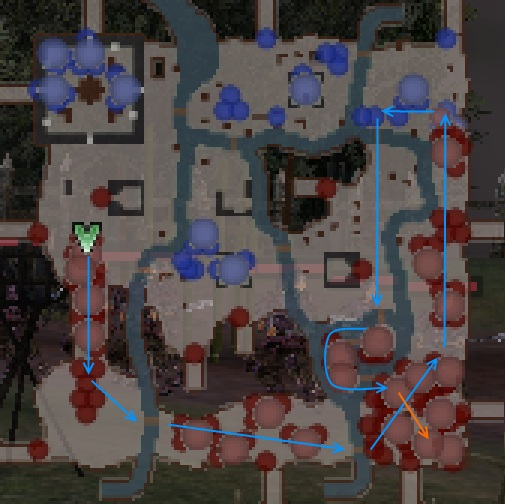

推薦全刷路線
與其頻繁進出關卡，倒不如多花一些小時間跑完全場，所以推薦您這個全刷路線：
前田慶次 → 甄宓 → 曹彰 → 吉川廣家 →（切換悟空趕路）→ 蒲生鄉舍 → 大谷吉繼 → 曹洪 → 樂進 →（切換悟空趕路）→ 三好長逸 → 徐盛 → 于禁 → 高順 → 傅士仁 →（切換悟空趕路）→ 周泰 → 丁奉 →（切換悟空趕路） → 朱桓 →（切換悟空趕路） → 曹仁 → 曹真 → 郝昭 →（切換悟空趕路）→ 孫韶 → 孫權
總共 21 名武將，每場 4～6 熟練度，雖然有繞路，但其實像賽車一樣跑個一圈賽道似的，依然是往前衝而不用來來回回，所以不會覺得累，一趟約 4 分鐘左右刷完。

吳 6 章：合淝之戰

路線單純，至少不用來來回回、追來追去的，跑一圈就完成一趟。
標準快刷路線
不覺得頻繁進出關卡累，只講究整體時間效益的話，這時可以建議這樣的快刷路線：
前田慶次 → 甄宓 → 曹彰 → 吉川廣家 →（切換悟空趕路）→ 蒲生鄉舍 → 大谷吉繼 → 曹洪 → 樂進 →（切換悟空趕路）→ 三好長逸 → 于禁 → 高順 → 傅士仁 → 孫韶 → 徐盛 → 孫權
總共 15 名武將，每場 3 熟練度，而且可說是直接殺向孫權的沿路清一清而已，所以很快，約 1 分 30 秒～2 分鐘左右。另外可打到三把武器，這些武將以粗體字標示。
順便刷鍊成屬性路線
想順便刷武器屬性來鍊成時，可以考慮解決周泰，變成四把武器，路線為：
前田慶次 → 甄宓 → 曹彰 → 吉川廣家 →（切換悟空趕路）→ 蒲生鄉舍 → 大谷吉繼 → 曹洪 → 樂進 →（切換悟空趕路）→ 三好長逸 → 于禁 → 高順 → 傅士仁 →（切換悟空趕路）→ 周泰 →（切換悟空趕路）→ 孫韶 → 徐盛 → 孫權
時間會變成 2 分鐘～2 分 30 秒。
缺點
「吳 6 章：合淝之戰」的缺點就是打得稍微慢一點，甄宓跟于禁會往其他地方移動，這時追過去解決他們恐怕會浪費 40 秒的時間。
過關後有動畫，按取消還是有點煩。
補充
我自己玩的時候，只有為了解開第四套造型，才會快刷熟練度到 20。
剩下的其他 30，我會跑故事模式，重溫劇情，順便看看有沒有特殊的角色對話。
我不覺得急著練滿熟練度是甚麼有趣的事……那只是提早結束這款遊戲的壽命不是嗎？